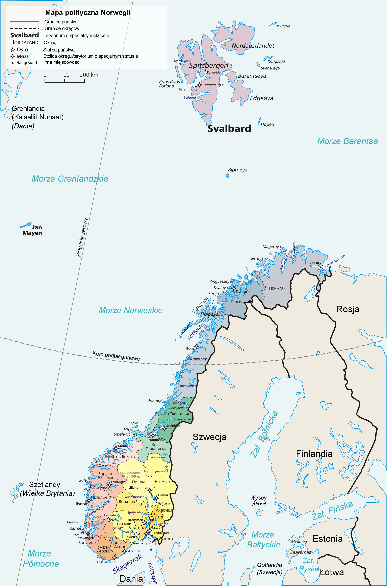
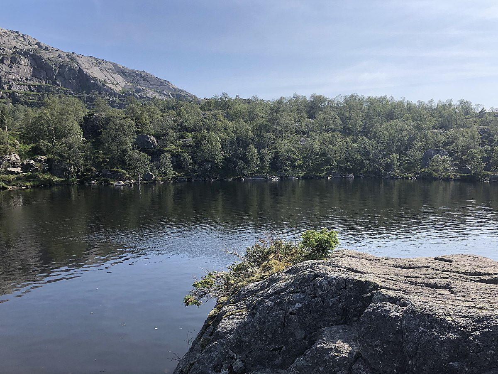
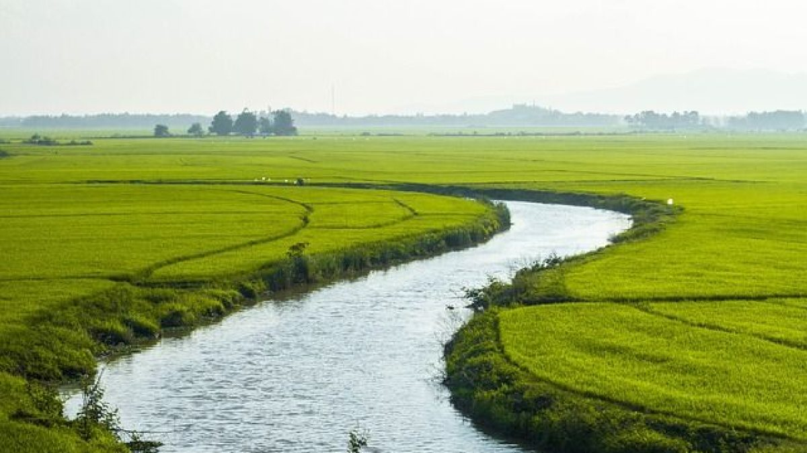
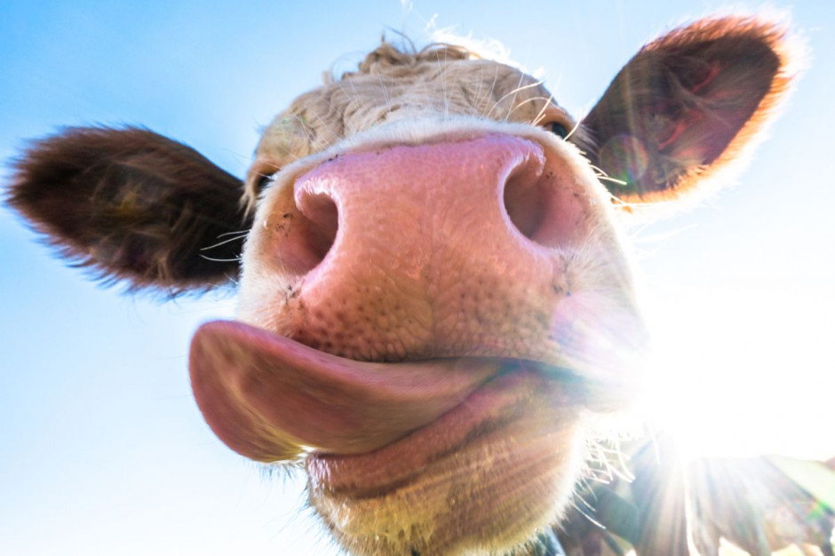

Presentation about Norway
Position
Norway is located in northern Europe and occupies the western and northern parts of the Scandinavian peninsula
Lakes
The largest of the lakes is the westernmost of the group. It covers 4800 m² and has a diameter of about 90 meters. Its catchment area is given as 30,000 m², its altitude as 531.3 meters. Partly only this lake is mentioned as Tjødnane. About 30 meters to the east is another lake in the group. Its height is slightly higher at 534.5 meters. It stretches about 80 meters from west to east and is up to 50 meters wide. A third lake is about 15 meters south of this, at an altitude of about 541 meters. It runs elongated from southwest to northeast over about 100 meters, with a width of up to about 40 meters. In addition, there are a few other smaller bodies of water in the immediate vicinity.
Rivers
Official name: Klarälven [1], other names: Klar, Trysilelva - a river in Norway and Sweden with a length of 460 km, a basin area of 11,800 km² and an average flow of about 165 m³/s.
Crops in Norway

Cereals are grown in Norway. mainly barley, oats and in the south also wheat.
Farm animals in norway
Developed greenhouse crops. The livestock population is declining; cattle are bred dairy type and sheep, and in the northern part - reindeer; farming of fur animals, especially foxes, is common.
Industry
The most important mineral resources are crude oil, 70% of which is extracted by the state-owned company Equinor, and natural gas extracted from the Norwegian sector of the shelf in the North Sea and the Norwegian Sea, as well as iron ore (mainly Kirkenes district), copper - near Løkken, Sulitjelma and Røros, titanium, nickel and molybdenum - in Knaben (one of the most important deposits in Europe), also zinc and lead ores as well as silver, sulfur, rock raw materials - limestone and granite.
Culture
Norway has a long tradition of folk art that includes sculpture, painting, embroidery and crocheting. Many of these traditional techniques are still practiced in Norway and can be seen in museums and craft shops. Norway is also known for its architecture, especially in the context of modern landscape architecture. Norwegian buildings are often designed to integrate with their natural surroundings, giving them a distinctive look. Norway has a long literary tradition that dates back to the Middle Ages. One of the most famous Norwegian writers was Henrik Ibsen, who is considered the father of modern theatre. Other famous Norwegian writers include Knut Hamsun, Sigrid Undset and Jo Nesbo. Norway has a rich musical tradition that ranges from traditional folk music to modern pop and rock music. Norway is also known for its music festival called "Norwegian Wood" which takes place every year in Oslo.
Religion
What do Norwegians believe? Nearly 70 percent of the country's population is Evangelical and belongs to the Church of Norway, which is a Protestant church of the Evangelical-Augsburg tradition. Religion in Norway is dominated by Lutheranism, which is the oldest and leading branch of Protestantism.